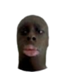
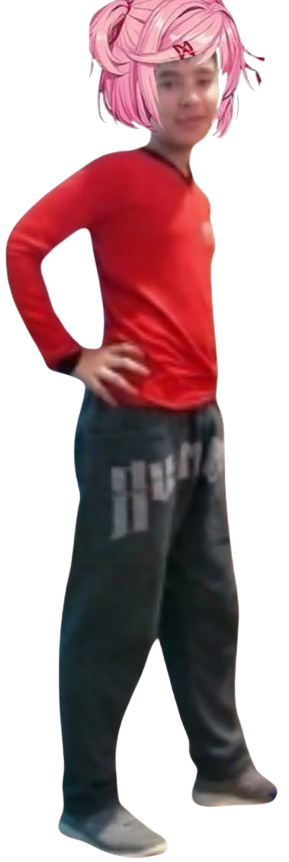

Vyuri
Vitor é um dos mais resenhudos e engraçados do grupo, sempre sendo um "anjinho" e riquinho..

UM CLUBE DE LITERATURA...
Um mod inspirado em Doki Doki Literature Club.
BAIXAR O MOD“Eu não sabia que ela tinha 8 anos.”
SOBRE O MOD
Doki Doki Modelo Club é um mod de DDLC feito por IAGO007REIDELAS, criado como piada de Iago e Kenedy por Bernardo ser "Tsundere", apelidado de Natsuki e muitas vezes "Bertsuki. Este mod de DDLC mistura a aparência das dokis com os corpos masculinos de Bernardo, Kenedy, Vitor e Wallan, gerando eventos cômicos do dia a dia. Mas não pense que é só histórinhas e um mod slice-of-life, afinal, este mod tem bastante LORE".
CONHEÇA O CLUBE
Vitor é um dos mais resenhudos e engraçados do grupo, sempre sendo um "anjinho" e riquinho..

Kaori é o amigo de infância do protagonista, canonicamente chamado de Iago.

Bertsuki é temido na escola por bater e maltratar seus animais, também é muito zoado por isso.

Wonika é o mais resenhudo e engraçado do grupo, porém sempre está longe, morando em sua cidade natal: Epitaciolândia do Norte, só vem em eventos importantes da cidade.

Iago é o MC desta bela obra, zoado por seus amigos por ser gordo, nerd e sempre vive nos dois extremos: pode falar a maior merda existente ou também pode falar a coisa mais genial do mundo, na maioria das vezes é alguma merda.
JOGUE AGORA
Baixe a versão demo e entre para o clube.
Versão 1.0 (demo) • IAGO007REIDELAS